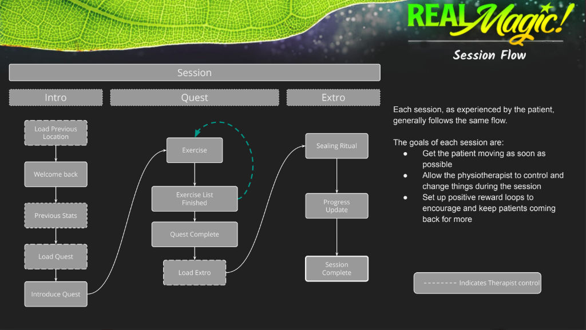
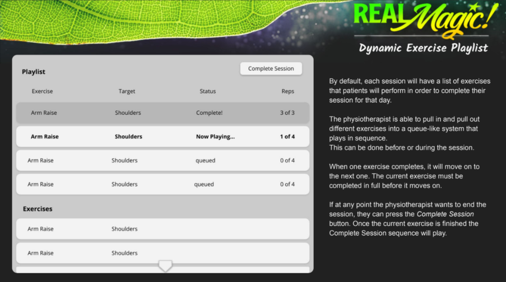

01What I owned
- Created original pitch transforming physio exercises into magical spells
- Designed customizable 'playlist' system for physiotherapists
- Worked with art director to establish inviting, non-childish visual style
- Collaborated with narrative director on story structure and characters
- Created tool for recording new exercises in VR
02The brief and the pitch
The company I was working for was approached by a biomedical tech company with a question: 'Can you make a VR game that makes Physiotherapy fun?'
I created a pitch where the repetitive exercises required in physio transformed into magical spells. The concept was as users literally healed their bodies, this would transform into magical energy that would heal the broken land around you.
The core inspiration was walking through my local community garden trying to think of a concept. Thinking of how these gardens grow and transform the land into something beautiful.
03Building the experience
The client loved the proposal, so we set out to achieve what we hoped would be an experience that would encourage users to continue to return to physio to engage with this experience again.
I worked closely with our narrative director to establish a basic story structure, including characters that would help guide the user through the experience. Each of these characters represented a common reason people either don't go to or stop doing physio. As the user progresses, they overcome their own thoughts and are encouraged to continue their own health journeys.

The art director and I established a look that we felt inviting and would run on the target proprietary hardware. It was important to me that it looked like a fun and whimsical place but did not look too childish as our target audience was not children for this product.


04Tools for therapists
One thing that was really important is that the game has the ability to be customizable by physiotherapists both before the game starts and during a patient session. I designed a 'playlist'-like system which allowed therapists to swap in different exercises as needed.
